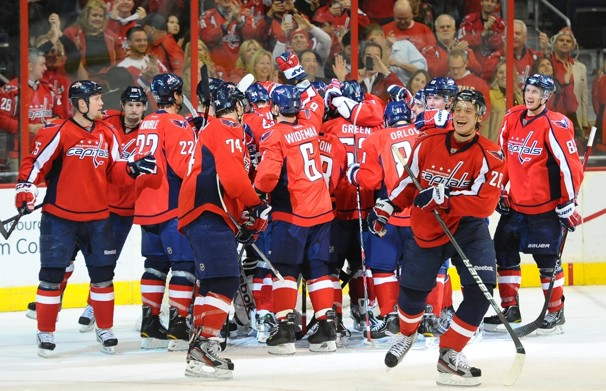

The Washington Capitals
The Washington Capitals are a hockey team based in Washington, D.C. and patriciapte in the NHL or National Hockey League. The team was founded in the 1974-1975 season. The team owner was a man by the name of Abe Pollin. The first several seasons, the team struggled to be competetive against better staffed teams and was the worst in the NHL. The team continued to struggle through the rest of the 1970's and 1980's. In fact, during the summer of 1982, the team was undergoing talks to move from D.C. This event kickstarted a campaign called 'Save the Caps.'
Throughout the early 90's the team improved drastically with new and improved player trades and changes in team management. David Poile was hired as the general manager and acquired Rod Langway, Brian Engblom, Doug Jarvis, and Craig Laughlin. This moved help save the franchise. In fact, the Capitals made the playoffs for the the next 14 years in a row. In 1998, the team was the Eastern Conference Champions and continued to thrive into the early 2000's.
The latest era of the Capitals story has come to be known as the Alexander Ovechkin era. Ovechkin was acquired in 2004 and selected first overall. In his first game, Alex was productive and scored two goals, leading the team to a 3-2 win over Columbus at the Verizon Center in Washington, D.C. Ovechkin's career continued to grow when in 2006, he became the first Washington Capital to win the Calder Trophy; a trophy given to the league's top rookie. His career continued to blossom in 2008 when he became the first player in NHL history to win the Hart Trophy, Art Ross Trophy, Lester B. Pearson Award, and Maurice Richard Trophy all in the same season. The team overall continued to improve. In 2009, the Capitals won game 7 of the Eastern Conference Semi Finals. This was the first series win in the Standley Cup in over 11 years and more impressively, it was the Capitals first win in a game 7 in more than 21 years. Recently, the Capitals ousted the Chicago Blackhawks in the Winter Classic at Nationals Park on January 1, 2015.